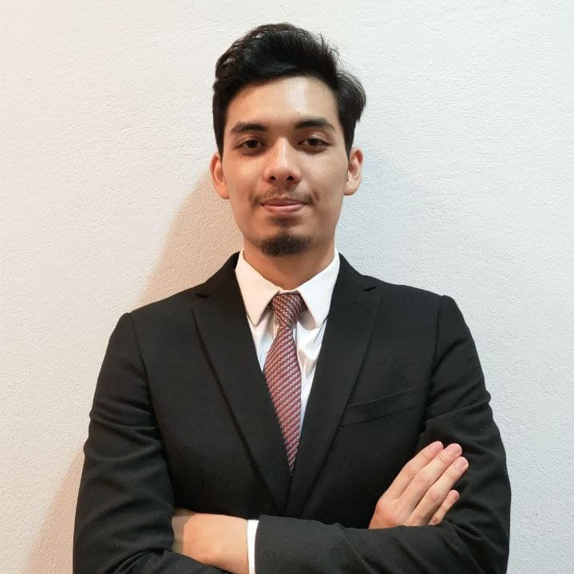

BIODATA

ABOUT ME
My name is Muhammad Afham Bin Nor Zawawi. i am 23 years old on 22 Jun 2022, and my birthday was at 22 Jun 1999. I have four siblings which i am number two from four. the eldest was boy, and the younger is a girl. My father name is Nor Zawawi Bin Daud and now he is 56 years old. He still working as a phsychology officer. My mother name is Ruzaini Bt Abd Sattar which she is 52 years old in 2022.She work as a teacher in Kelantan.
I have a lot of hobbies, which is outdoor and the indoor activities. For the outdoor activities, i like to play football, golf, tennis as a outdoor spors game. for the indoor, i prefer for chess, squash and badminton as my sports. Right now, the most frequent that i have played was badminton. everytime i felt stress with the works, i will booking for badminton court in the evening. Usually, i play badminton with my third sibling, which is my younger brother. i really enjoy playing badminton.
Before the covid happen, i spend my time with my friends for vacation to some interesting place. But when the travel has restricted and we need to face procedure by procedure before go for vacation, i not so having interest to go outside from my province. Moreover, the cases still high and the new variant has come into Malaysia. It is better for me to just stay at home and doing some activities.
COPYRIGHT © AFHAM ZAWAWI